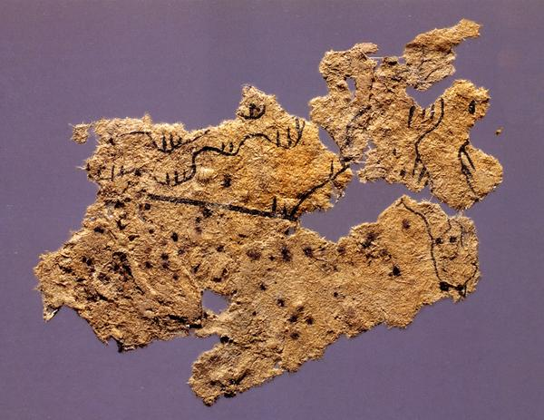
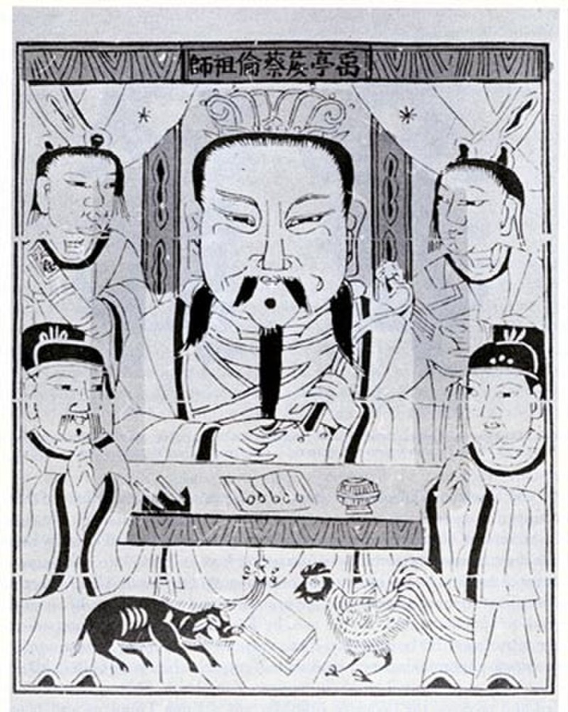
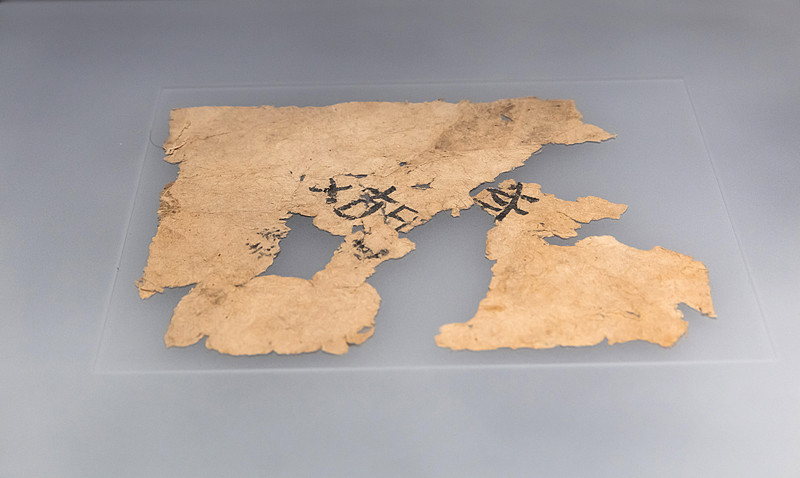
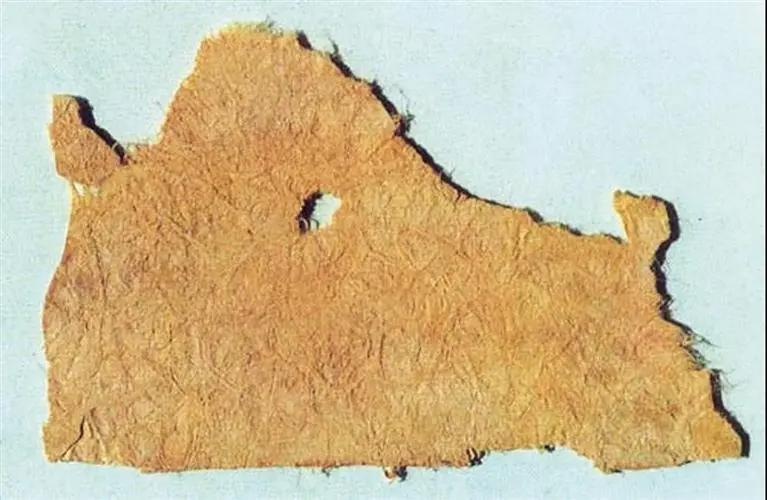

正在调出 3D……
这台设备暂时跑不动 3D。
拖动模型旋转。鼠标用滚轮缩放，触屏用双指缩放。
课后复习、课前预习，顺着时间往下走。先选册，再选课。
王位照旧传给长子，其他儿子也各自分到一块地。先猜一猜：继位的长子，还能直接管新分出去的地吗？
不是地自己对半切。每一代，诸侯王都得上奏、等皇帝批准，才能把地分给儿子；新封的侯国一出现，就归汉郡管，王管不着。这样一代代下来，王能直接管的地一点点变少，并不按固定的几分之几来。
地块大小在这里只是示意，真正要紧的是管辖线指向谁。
你从长安出发，手里有一匹丝绸。这匹丝绸可能经不同商人多次转手，每到一站，就把货交给下一段的人。主干路一站接一站，遇到分岔，往哪走由你选。




1. 凭这张纸，你能确定什么？
2. 那凭这一张纸，还判断不了什么？
正在调出 3D……
这台设备暂时跑不动 3D。
拖动模型旋转。鼠标用滚轮缩放，触屏用双指缩放。